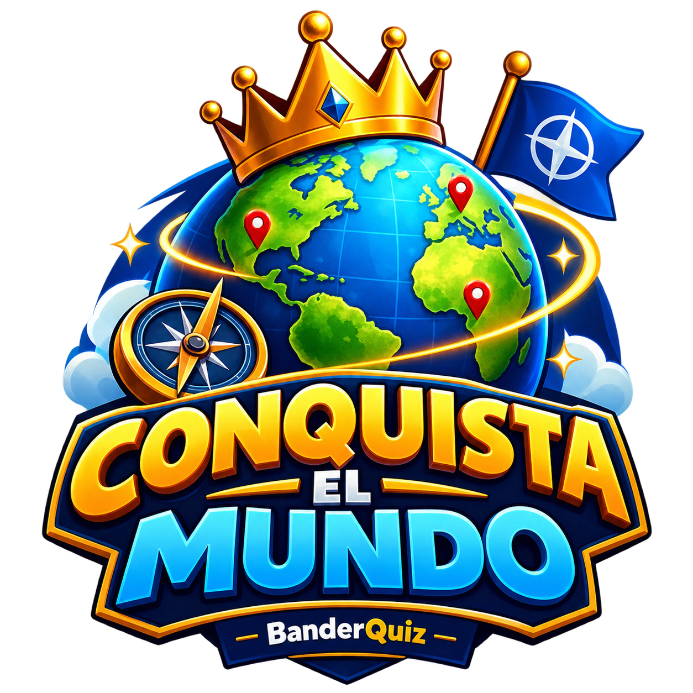

DOS MODOS DE JUEGO
🌎 Elige cómo jugar
El juego original y la nueva beta funcionan de forma independiente.
BanderQuiz Clásico
El juego original de preguntas con banderas, puntuación, vidas y rachas.
Jugar clásico →
Conquista el Mundo BETA
Explora el mapa, toca países grises, usa la bandera como pista y conquista el mundo.
Probar beta →